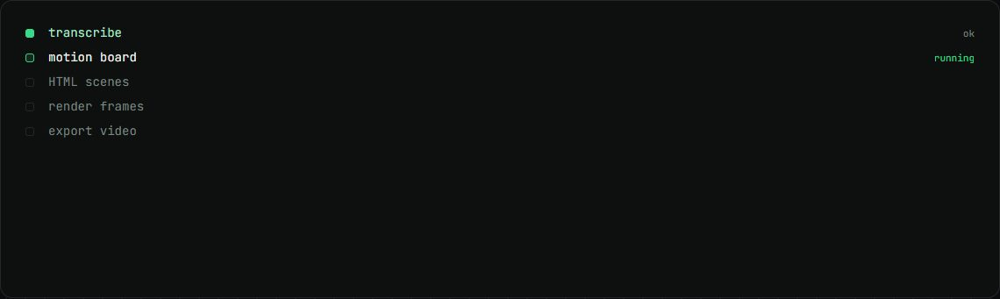
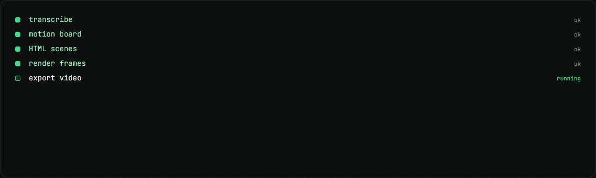

ClaudeVid
Paste a video link, get it back with AI-made motion graphics. The videos on this site use its renderer.
my role Built the app and the render method.
The problem
Motion graphics usually need an editor and an editing app. I wanted them written as code, so they can be planned, reviewed and re-rendered exactly.
How it works
- AssemblyAI transcribes the video.
- Claude writes a motion board, then an HTML scene for each moment.
- Scenes run on one paused GSAP timeline, and headless Chrome renders them frame by frame.
- FFmpeg joins the frames and sound, and the result goes back to Drive.
What changed
- 6videos on this site rendered with it
What I built
- The Next.js app and the render server.
- The frame-by-frame render method, which gives the same video every time.
- The six explainer videos on this site.
Stack
- Next.js
- Claude API
- AssemblyAI
- GSAP
- Headless Chrome
- FFmpeg
Stills

